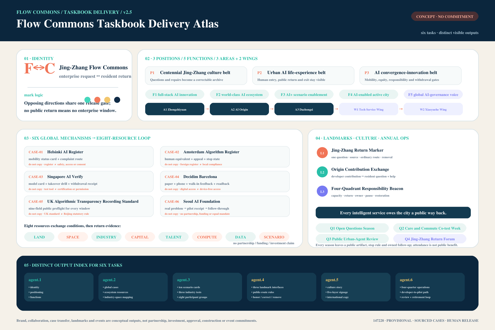
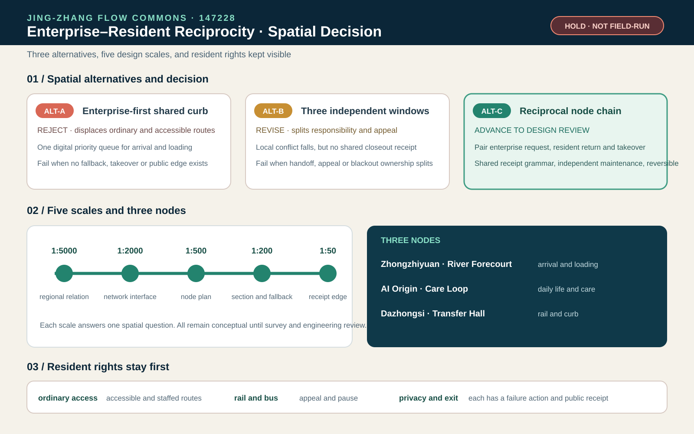
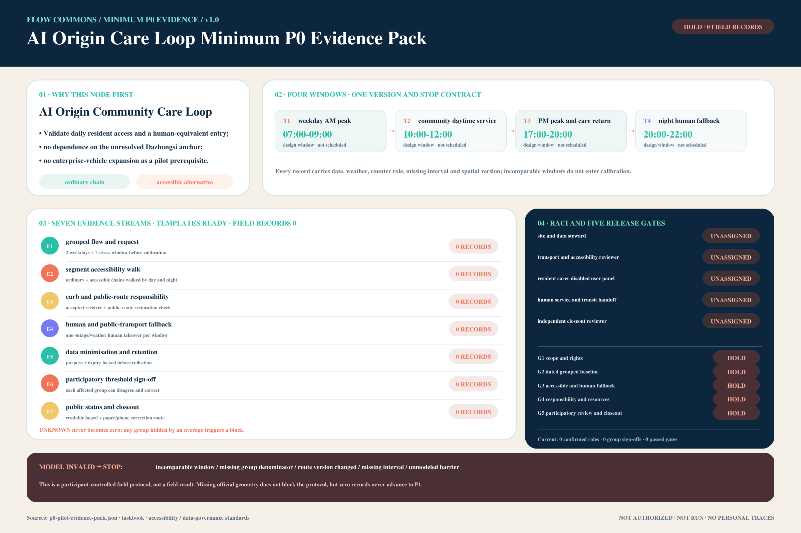

Six taskbook output indices
Three scales: strategic study, overall design and key areas. Buildings and renewal projects remain bounded by provisional geometry, sources, assumptions and field evidence.
agent.1 overall system
Bilingual name, F↔C mark, three positions, five functions and a three-area/two-wing loop.
agent.2 ecosystem
Six public mechanism cases, eight-resource loop and do-not-copy boundaries.
agent.3 AI+ scenarios
Ten scenarios, three industry tests, eight participant groups and human equivalents.
agent.4 public landmarks
Three responsibility landmarks, public-route rules and correction/removal entries.
agent.5 cultural expression
Jing-Zhang engineering, Zhongguancun openness, AI public return and five-layer signage.
agent.6 long-term operations
Four-season question, co-test, review and return loop with artifacts, owners and exit.
Reciprocity gate and three interfaces
The first question is not total efficiency. It is whether an enterprise benefit displaces the slowest resident path. Four conflict windows share one stop rule.

Brand, ecosystem, landmarks, culture and annual operations enter the reading layer
The F↔C mark, three positions, five functions, three areas and two wings, six cases, eight resources, three responsibility landmarks and four-season problem loop each have a distinct output. All remain conceptual.

Read land use as a service interface
Enterprise entrances, daily community access and rail transfer are three responsibility interfaces. Every area and boundary remains provisional.

Three key areas, three spatial prototypes
The Zhongzhiyuan River Forecourt, AI Origin Care Loop and Dazhongsi Four-Quadrant Hall address enterprise frontage, resident routines and rail interchange separately. Each board pairs enterprise requests with resident returns, stop rules and missing evidence. PROV-KEY-003 is not a station anchor, so it is neither shifted nor used for station-level claims.

Three alternatives, five scales, resident rights remain visible
ALT-A is rejected, ALT-B is sent back for revision and ALT-C advances to design review. Each scale answers one spatial question. Rights, fallback and withdrawal remain on HOLD until field evidence and responsibility are confirmed.

Rail and bus are the backbone; walking and accessibility are the floor
Shuttles, logistics and curb windows supplement public transport. Staffed and public alternatives remain open during outage, weather or conflict.

Shade, rest and weather fallback serve the slowest path first
Blue-green relations identify candidate routes only. No health, flood or comfort performance is released without field evidence.

AI organises conflicts; people authorise release
AI may aggregate grouped demand, explain conflicts and replay evidence. It cannot appoint roles, publish READY, erase prior records or turn a synthetic PASS into authority.

Lock the denominator before publishing intensity or benefit
All five resource denominators remain unlocked. Field measurements, accepted responsibility and operating authorisations remain zero.

Three scales, three key areas and one station-to-home chain
Regional, overall and key-area work share one base. Industry service, daily life, mobility, utilities, blue-green space, renewal and governance link to reviewable artifacts.

Evaluate each window without averaging away the slowest segment
Eight synthetic groups replay four time windows and four candidate policies. The highest raw satisfaction proxy still has to pass first/last-mile, accessibility and non-enterprise protection gates.

Enterprise feeders cannot displace transit or resident access
The guard stops transit displacement, excessive feeder share, vehicle-kilometre growth and worst-group access gaps. Air and unmanaged expansion remain fail closed.

Return synthetic flows to reviewable spatial interfaces
The atlas links group, time window and mode to provisional areas and interfaces only. It does not turn an analytical graph into observed stations, demand or statutory roads.

Validate the AI Origin Care Loop before calling a protocol a result
Seven field templates are ready, while field records, confirmed roles, group sign-offs, calibrated parameters and passed gates remain zero. An ordinary and accessible chain precede enterprise-vehicle expansion.

Package evidence replays; field release stays stopped
The reciprocity gate passes 15 checks and four negative fixtures. Missing audit, accepted transfer, locked denominator or authority keeps G1 on HOLD.

Boundary: PASS proves only that package structure can be replayed. It does not prove real demand, staffing, accessibility performance, public acceptance, authority or implementation outcomes.
Package replay: PASS · field release: HOLD · accepted transfers: 0 · locked denominators: 0
Package replay: PASS · field release: HOLD · accepted transfers: 0 · locked denominators: 0